About Me
My primary focus lies in the intricate study of elastic curves and surfaces, emphasizing their relationship with differential geometry. Additionally, I explore the complexities of nonlinear ordinary differential equations within the field of Elasticity.
My recent work revolves around developing finite-difference schemes for shape optimization based on elastic energy. This endeavor entails precise formulation of physical constraints and boundary conditions. To bring these concepts to life, I create mathematical software in languages such as Matlab, Python, or Rust, bridging theory with practical numerical solutions.
I derive immense satisfaction from crafting well-informed initial hypotheses, which, when pursued, lead to the discovery of nontrivial solutions. This expands the horizons of elasticity and shape optimization.
My passion extends to creating photorealistic images and animations of optimized shapes, accomplished through the synergy of Python and Blender. Additionally, I develop web-based interactive visualizations, recognizing the value of effective visualization tools in enhancing the understanding of our results, illuminating the intricate world of elasticity and its applications in shape optimization.
More about me
I am currently a Postdoctoral Research Associate in the Mechanics and Materials Unit at Okinawa Institute of Science and Technology (OIST). I received my Bachelors and Masters degrees in Mechanical Engineering from IIT Kanpur. During my masters, I worked on developing energy preserving symplectic algorithms for discrete Hamiltonian systems. I got my Ph.D. in Mechanical Engineering at the University of Houston.
My main research interest is the development of variational frameworks and their application to energy based optimal shapes of curves and surfaces. Unstretchable material, virus modeling, interfacial mechanics.
dd.
A differential geometer by training, I received my PhD from Texas Tech
University under the guidance of Magdalena
Toda, with co-advisors Eugenio
Aulisa and Hung Tran. At this time,
I applied techniques from Riemannian geometry, variational calculus, and differential
topology to study functionals involving surface curvature, with the ultimate goal of
understanding their extrema. Moreover, I was (and still am) interested in understanding the
possible immersions of a given topological space inside another, including what
configurations are “preferred” (usually energy-minimizing) in this case. I also spent quite
a bit of time thinking about the computational modeling of geometric objects, sparking a
standing interest in computer graphics which can be seen in the various simulation videos
found on the Gallery page.
Catalyzed by an NSF
internship at Oak Ridge National Lab (featured here!) toward the end of
graduate school where I worked with Robert Bridges, I became
involved post-PhD in scientific algorithm development for dimension reduction, function
approximation, and the reduced-order modeling of PDEs. This led to a postdoctoral
appointment with Max Gunzburger at FSU
working on data-driven strategies for predictive tasks related to ocean modeling. At the
same time as my application-driven interests were shifting, my purer “side project” work
also moved in the direction of rigidity results for geometric objects constrained by
curvature conditions. Now, I maintain active interests in several areas of mathematics,
computer science, and engineering.
Broad research keywords which tend to
interest me include: scientific machine learning, computational and discrete geometry,
conservation laws, reduced-order modeling, manifold learning, harmonic maps, surface
immersions, and integrability problems. A more detailed description of my interests can be
found in my academic research statement (current
as of 9/21).
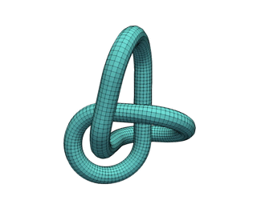
Below are some coarse categories containing (some of) my work. Some have their own
page for further reading. (This part of the website is a work-in-progress.)
Structure-Informed Function Approximation and Model Reduction
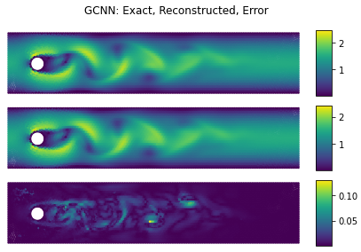 Due to their high computational cost, scientific studies based on large-scale simulation frequently operate at a data deficit which creates problems inverse to the issues with “big data”. Particularly, there is a need for efficient function approximation and model reduction strategies which can serve as cheap and reliable surrogates for the high-fidelity models used in practical applications. These projects develop such technology using invariances and other structural considerations as a starting point, allowing for informed surrogates with beneficial behavior.
Projects
Reversible and Irreversible Bracket-Based Dynamics for Deep Graph Neural Networks Preprint
Abstract: Recent works have shown that physics-inspired
architectures allow the training of deep graph neural networks (GNNs) without oversmoothing.
The role of these physics is unclear, however, with successful examples of both reversible
(e.g., Hamiltonian) and irreversible (e.g., diffusion) phenomena producing comparable
results despite diametrically opposed mechanisms, and further complications arising due to
empirical departures from mathematical theory. This work presents a series of novel GNN
architectures based upon structure-preserving bracket-based dynamical systems, which are
provably guaranteed to either conserve energy or generate positive dissipation with
increasing depth. It is shown that the theoretically principled framework employed here
allows for inherently explainable constructions, which contextualize departures from theory
in current architectures and better elucidate the roles of reversibility and irreversibility
in network performance
(Joint with Kookjin Lee and Nathaniel
Trask.)
Canonical and Noncanonical Hamiltonian Operator Inference Preprint
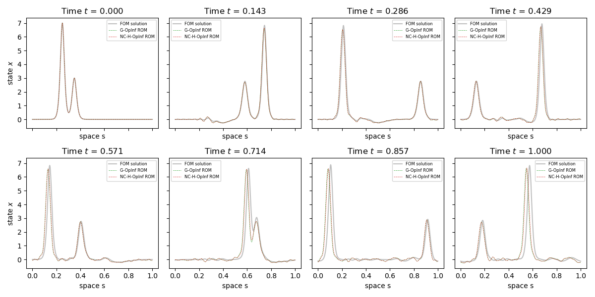 Abstract: A method for the nonintrusive and
structure-preserving model reduction of canonical and noncanonical Hamiltonian systems is
presented. Based on the idea of operator inference, this technique is provably convergent
and reduces to a straightforward linear solve given snapshot data and gray-box knowledge of
the system Hamiltonian. Examples involving several hyperbolic partial differential equations
show that the proposed method yields reduced models which, in addition to being accurate and
stable with respect to the addition of basis modes, preserve conserved quantities well
outside the range of their training data.
(Joint with Irina Tezaur.)
Multifidelity Monte Carlo Estimation for Efficient Uncertainty Quantification in Climate-Related Modeling Preprint
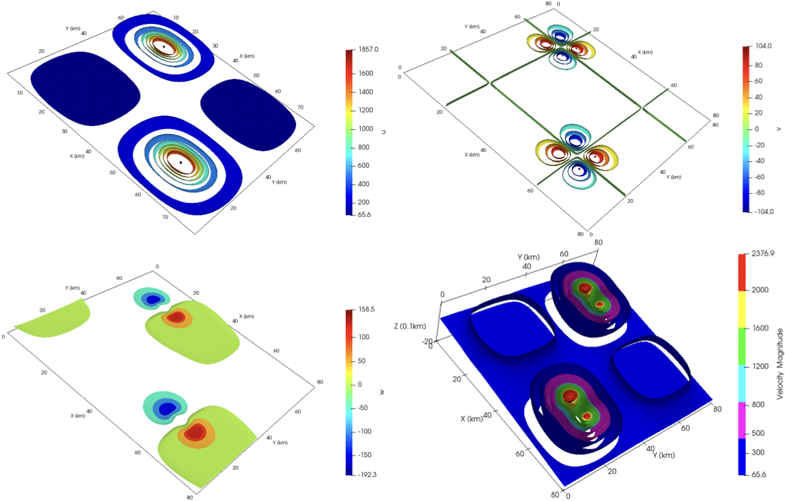 Abstract: Uncertainties in an output of interest that
depends on the solution of a complex system (e.g., of partial differential equations with
random inputs) are often, if not nearly ubiquitously, determined in practice using Monte
Carlo (MC) estimation. While simple to implement, MC estimation fails to provide reliable
information about statistical quantities (such as the expected value of the output of
interest) in application settings such as climate modeling for which obtaining a single
realization of the output of interest is a costly endeavor. Specifically, the dilemma
encountered is that many samples of the output of interest have to be collected in order to
obtain an MC estimator having sufficient accuracy; so many, in fact, that the available
computational budget is not large enough to effect the number of samples needed. To
circumvent this dilemma, we consider using multifidelity Monte Carlo (MFMC) estimation which
leverages the use of less costly and less accurate surrogate models (such as coarser grids,
reduced-order models, simplified physics, interpolants, etc.) to achieve, for the same
computational budget, higher accuracy compared to that obtained by an MC estimator or,
looking at it another way, an MFMC estimator obtains the same accuracy as the MC estimator
at lower computational cost. The key to the efficacy of MFMC estimation is the fact that
most of the required computational budget is loaded onto the less costly surrogate models,
so that very few samples are taken of the more expensive model of interest. We first provide
a more detailed discussion about the need to consider an alternate to MC estimation for
uncertainty quantification. Subsequently, we present a review, in an abstract setting, of
the MFMC approach along with its application to three climate-related benchmark problems as
a proof-of-concept exercise.
(Joint with Max Gunzburger, Lili Ju, Rihui Lan,
and Zhu Wang.)
A Multifidelity Monte Carlo Method for Realistic Computational Budgets Preprint
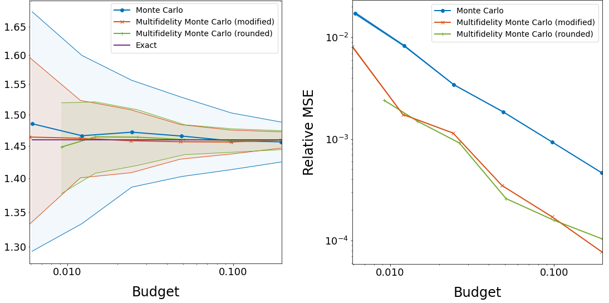 Abstract: A method for the multifidelity Monte Carlo
(MFMC) estimation of statistical quantities is proposed which is applicable to computational
budgets of any size. Based on a sequence of optimization problems each with a globally
minimizing closed-form solution, this method extends the usability of a well known MFMC
algorithm, recovering it when the computational budget is large enough. Theoretical results
verify that the proposed approach is at least as optimal as its namesake and retains the
benefits of multifidelity estimation with minimal assumptions on the budget or amount of
available data, providing a notable reduction in variance over simple Monte Carlo
estimation.
(Joint with Max
Gunzburger, Lili Ju, and Zhu Wang.)
Energetically Consistent Model Reduction for Metriplectic Systems Preprint
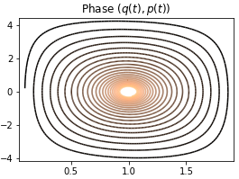 Abstract: The metriplectic formalism is useful for
describing complete dynamical systems which conserve energy and produce entropy. This
creates challenges for model reduction, as the elimination of high-frequency information
will generally not preserve the metriplectic structure which governs long-term stability of
the system. Based on proper orthogonal decomposition, a provably convergent metriplectic
reduced-order model is formulated which is guaranteed to maintain the algebraic structure
necessary for energy conservation and entropy formation. Numerical results on benchmark
problems show that the proposed method is remarkably stable, leading to improved accuracy
over long time scales at a moderate increase in cost over naive methods.
(Joint
with Max Gunzburger, Lili Ju, and Zhu Wang.)
Comparing Neural Architectures for Reduced-Order Modeling Preprint Read More
Abstract: The popularity of deep convolutional autoencoders (CAEs) has
engendered new and effective reduced-order models (ROMs) for the simulation of large-scale
dynamical systems. Despite this, it is still unknown whether deep CAEs provide superior
performance over established linear techniques or other network-based methods in all
modeling scenarios. To elucidate this, the effect of autoencoder architecture on its
associated ROM is studied through the comparison of deep CAEs against two alternatives: a
simple fully connected autoencoder, and a novel graph convolutional autoencoder. Through
benchmark experiments, it is shown that the superior autoencoder architecture for a given
ROM application is highly dependent on the size of the latent space and the structure of the
snapshot data, with the proposed architecture demonstrating benefits on data with irregular
connectivity when the latent space is sufficiently large.
(Joint with Max Gunzburger, Lili Ju, and Zhu Wang.)
Learning the Structure of Level Sets from Sparse Data Preprint Read More
Abstract: A dimension reduction method based on the
``Nonlinear Level set Learning’’ (NLL) approach is presented for the pointwise prediction of
functions which have been sparsely sampled. Leveraging geometric information provided by the
Implicit Function Theorem, the proposed algorithm effectively reduces the input dimension to
the theoretical lower bound with minor accuracy loss, providing a one-dimensional
representation of the function which can be used for regression and sensitivity analysis.
Experiments and applications are presented which compare this modified NLL with the original
NLL and the Active Subspaces (AS) method. While accommodating sparse input data, the
proposed algorithm is shown to train quickly and provide a much more accurate and
informative reduction than either AS or the original NLL on two example functions with
high-dimensional domains, as well as two state-dependent quantities depending on the
solutions to parametric differential equations.
(Joint with Max Gunzburger, Lili Ju, Yuankai Teng, and Zhu Wang.)
Pseudo-Reversible Neural Networks Preprint
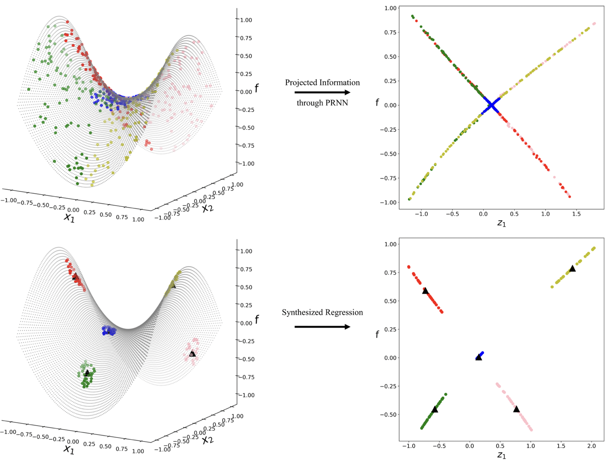
Abstract: Due to the curse of dimensionality and limitations on training
data, approximating high-dimensional functions is a very challenging task even for powerful
deep neural networks. Inspired by the Nonlinear Level set Learning (NLL) method that uses
the reversible residual network (RevNet), in this paper we propose a new method for function
approximation called Dimension Reduction via Learning Level Sets (DRiLLS). Our method
contains two major components: one is the pseudo-reversible neural network (PRNN) module
that effectively transforms high-dimensional input variables to low-dimensional active
variables, and the other is the synthesized regression module for approximating function
values based on the transformed data in the low-dimensional space. Extensive experimental
results demonstrate that DRiLLS outperforms both the NLL and Active Subspace methods,
especially when the target function possesses critical points in the interior of its input
domain.
(Joint with Lili Ju, Yuankai Teng, Zhu Wang, and Guannan Zhang.)
Active Manifolds: Geometric Data Analysis for Dimension Reduction Here Read More.
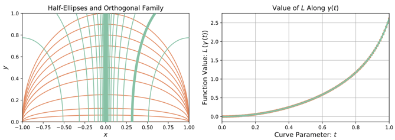
Abstract: We present an approach to analyze \(C^1(\mathbb{R}^m)\) functions
that addresses limitations present in the Active Subspaces (AS) method of Constantine et al.
Under appropriate hypotheses, our Active Manifolds (AM) method identifies a 1-D curve in the
domain (the active manifold) on which nearly all values of the unknown function are
attained, and which can be exploited for approximation or analysis, especially when \(m\) is
large (high-dimensional input space). We provide theorems justifying our AM technique and an
algorithm permitting functional approximation and sensitivity analysis. Using accessible,
low-dimensional functions as initial examples, we show AM reduces approximation error by an
order of magnitude compared to AS, at the expense of more computation. Following this, we
revisit the sensitivity analysis by Glaws et al. who apply AS to analyze a
magnetohydrodynamic power generator model, and compare the performance of AM on the same
data. Our analysis provides detailed information not captured by AS, exhibiting the
influence of each parameter individually along an active manifold. Overall, AM represents a
novel technique for analyzing functional models with benefits including: reducing
\(m\)-dimensional analysis to a 1-D analogue, permitting more accurate regression than AS
(at more computational expense), enabling more informative sensitivity analysis, and
granting accessible visualizations (2-D plots) of parameter sensitivity along the AM.
(Joint with Robert Bridges, Christopher Felder, and Miki Verma.)
Rigidity Results for Immersed Submanifolds
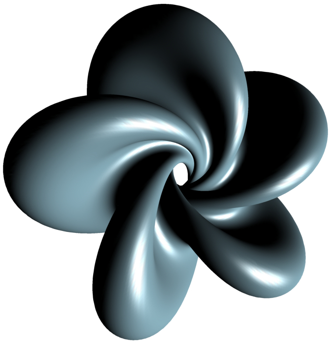 Many
practical problems involving shape deformation can be understood in the context of “allowable”
mappings between Riemannan spaces. When these mappings are constrained by natural geometric
conditions on e.g. curvature, their existence is governed by overdetermined PDEs which are
difficult to approach using classical analytic techniques. These projects establish
characterization results in my preferred style for certain classes of mappings which I have
encountered in applications.
(Hopf torus courtesy of Álvaro Pámpano.)
Projects
Planar Immersions with Prescribed Curl and Jacobian Determinant are Unique Preprint
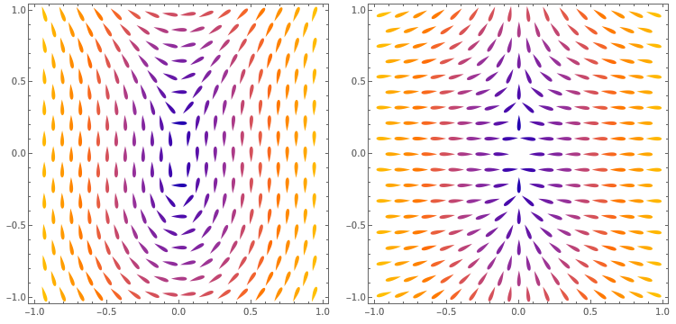
Abstract: We prove that immersions of planar domains are uniquely specified
by their Jacobian determinant, curl function, and boundary values. This settles the
two-dimensional version of an outstanding conjecture related to a particular grid generation
method in computer graphics.
Parallel Codazzi Tensors with Submanifold Applications Preprint
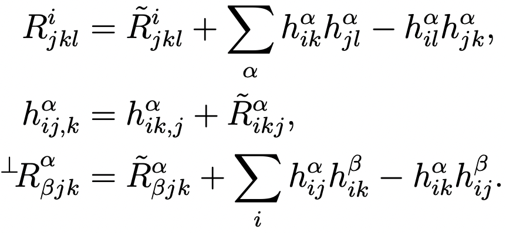 Abstract: A decomposition theorem is established for a class of closed Riemannian submanifolds immersed in a space form of constant sectional curvature. In particular, it is shown that if \(M\) has nonnegative sectional curvature and admits a Codazzi tensor with “parallel mean curvature”, then \(M\) is locally isometric to a direct product of irreducible factors determined by the spectrum of that tensor. This decomposition is global when \(M\) is simply connected, and generalizes what is known for immersed submanifolds with parallel mean curvature vector.
Quaternionic Surface Theory for Graphics and Meshing
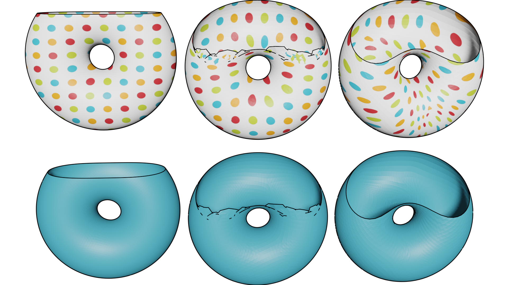 Just as classical complex analysis facilitates study of the conformal geometry of planar domains, the rich algebraic structure of the quaternions enables a useful framework for describing the conformal geometry of surfaces in Euclidean space. These projects develop and use quaternionic surface theory for graphics and meshing applications.
Projects
Quasiconformal Mappings with Surface Domains Preprint
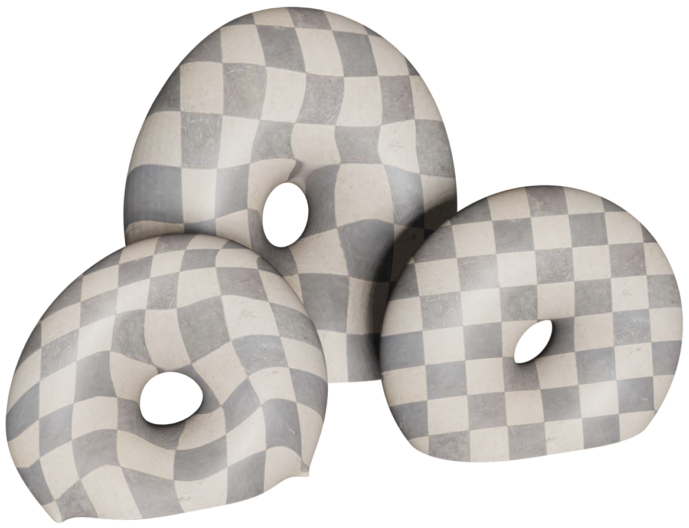
Abstract: Quasiconformal mappings from surfaces immersed in Euclidean space
are discussed for the purposes of computing dilatation-optimal surface meshes with
prescribed connectivity and Dirichlet boundary data. In particular, a quaternionic
formulation of quasiconformality is proposed which leads to a linear algorithm for computing
least-squares quasiconformal maps from surfaces given as extrinsic mesh data. This
facilitates an iterative procedure which computes optimal quasiconformal mappings with
optional constraints on surface area and extrinsic geometry. Based on the established
Quasiconformal Iteration method, the proposed algorithm produces high quality surface
mappings which correctly capture boundary information while eliminating undesirable folds
which appear during least-squares conformal mapping procedures.
(Joint with Eugenio Aulisa.)
Modeling the p-Willmore Flow of Surfaces Here Read More
Abstract: The unsigned p-Willmore functional generalizes important
geometric functionals which measure the area and Willmore energy of immersed surfaces.
Presently, techniques of Dziuk are adapted to compute the first variation of this functional
as a weak-form system of equations, which are subsequently used to develop a model for the
p-Willmore flow of closed surfaces in \(\mathbb{R}^3\). This model is amenable to
constraints on surface area and enclosed volume, and is shown to decrease the p-Willmore
energy monotonically. In addition, a penalty-based regularization procedure is formulated to
prevent artificial mesh degeneration along the flow; inspired by a conformality condition
derived by Kamberov et al., this procedure encourages angle-preservation in a closed and
oriented surface immersion as it evolves. Following this, a finite-element discretization of
both procedures is discussed, an algorithm for running the flow is given, and an application
to mesh editing is presented.
(Joint with Eugenio Aulisa.)
Curvature Functionals and p-Willmore Energy
Functionals involving surface curvature are widely used as models for
elastic phenomena, and their critical points are frequently representative of physically
relevant structures such as biomembranes or material interfaces. These projects involve a
variational characterization of curvature functionals and their critical surfaces, both from a
general perspective and in multiple specific cases of interest.
Projects
Instability of Closed \(p\)-Elastic Curves in \(\mathcal{S}^2\) Preprint
 Abstract: For \(p \in \mathbb{R}\), we show that non-circular closed
p-elastic curves in \(\mathbb{S}^2\) exist only when \(p=2\), in which case they are
classical elastic curves, or when \(p\in(0,1)\). In the latter case, we prove that for every
pair of relatively prime natural numbers \(n\) and \(m\) satisfying
\(m<2n<2\sqrt{m}\), there exists a closed spherical \(p\)-elastic curve with
non-constant curvature which winds around a pole \(n\) times and closes up in m periods of
its curvature. Further, we show that all closed spherical \(p\)-elastic curves for
\(p\in(0,1)\) are unstable as critical points of the p-elastic energy.
Abstract: For \(p \in \mathbb{R}\), we show that non-circular closed
p-elastic curves in \(\mathbb{S}^2\) exist only when \(p=2\), in which case they are
classical elastic curves, or when \(p\in(0,1)\). In the latter case, we prove that for every
pair of relatively prime natural numbers \(n\) and \(m\) satisfying
\(m<2n<2\sqrt{m}\), there exists a closed spherical \(p\)-elastic curve with
non-constant curvature which winds around a pole \(n\) times and closes up in m periods of
its curvature. Further, we show that all closed spherical \(p\)-elastic curves for
\(p\in(0,1)\) are unstable as critical points of the p-elastic energy.
(Joint
with Magdalena Toda and Álvaro Pámpano.)
On p-Willmore Disks with Boundary Energies Preprint
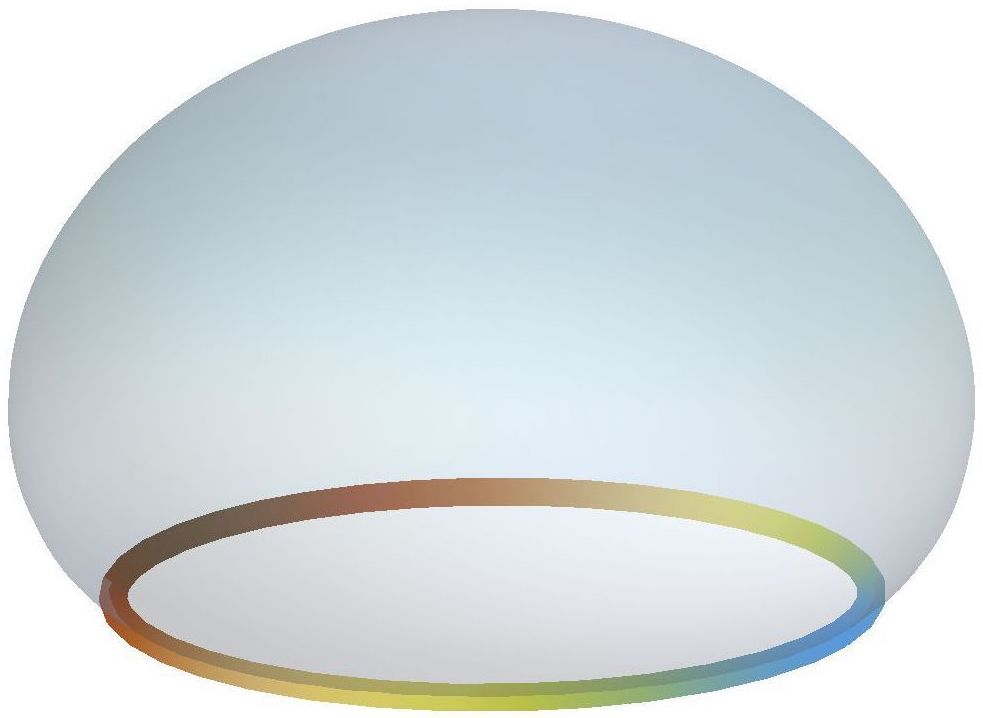
Abstract: We consider an energy functional on surface immersions which
includes contributions from both boundary and interior. Inspired by physical examples, the
boundary is modeled as the center line of a generalized Kirchhoff elastic rod, while the
interior term is arbitrarily dependent on the mean curvature and linearly dependent on the
Gaussian curvature. We study equilibrium configurations for this energy in general among
topological disks, as well as specifically for the class of examples known as p-Willmore
energies.
(Joint with Magdalena
Toda and Álvaro
Pámpano.)
Regarding the Euler-Plateau Problem with Elastic Modulus Preprint
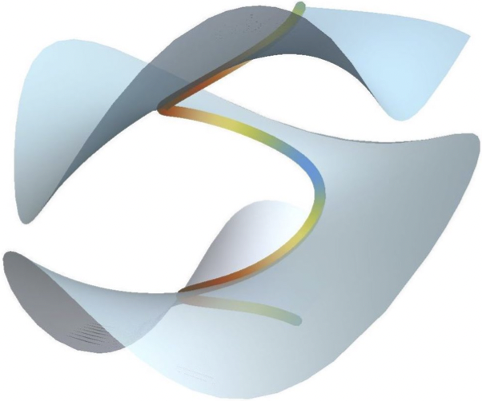 Abstract: We study equilibrium configurations for the
Euler-Plateau energy with elastic modulus, which couples an energy functional of
Euler-Plateau type with a total curvature term often present in models for the free energy
of biomembranes. It is shown that the potential minimizers of this energy are highly
dependent on the choice of physical rigidity parameters, and that the area of critical
surfaces can be computed entirely from their boundary data. When the elastic modulus does
not vanish, it is shown that axially symmetric critical immersions and critical immersions
of disk type are necessarily planar domains bounded by area-constrained elasticae. The cases
of topological genus zero with multiple boundary components and unrestricted genus with
control on the geodesic torsion are also discussed, and sufficient conditions are given
which establish the same conclusion in these cases.
(Joint with Magdalena Toda and Álvaro Pámpano.)
Stationary Surfaces with Boundaries Preprint
Abstract: This article investigates stationary surfaces
with boundaries, which arise as the critical points of functionals dependent on curvature.
Precisely, a generalized “bending energy” functional \(\mathcal{W}\) is considered which
involves a Lagrangian that is symmetric in the principal curvatures. The first variation of
\(\mathcal{W}\) is computed, and a stress tensor is extracted whose divergence quantifies
deviation from \(\mathcal{W}\)-criticality. Boundary-value problems are then examined, and a
characterization of free-boundary \(\mathcal{W}\)-surfaces with rotational symmetry is given
for scaling-invariant \(\mathcal{W}\)-functionals. In case the functional is not
scaling-invariant, certain boundary-to-interior consequences are discussed. Finally, some
applications to the conformal Willmore energy and the p-Willmore energy of surfaces are
presented.
(Joint with Magdalena
Toda and Hung Tran.)
On the Variation of Curvature Functionals in a Space Form with Applications to a Generalized Willmore Energy Preprint
Abstract: Functionals involving surface curvature are important across a
range of scientific disciplines, and their extrema are representative of physically
meaningful objects such as atomic lattices and biomembranes. Inspired in particular by the
relationship of the Willmore energy to lipid bilayers, we consider a general functional
depending on a surface and a symmetric combination of its principal curvatures, provided the
surface is immersed in a 3-D space form. We compute the first and second variations of this
functional, leading to expressions given entirely in terms of the surface fundamental forms.
We then apply the stability criteria afforded by our calculations to a generalization of the
Willmore functional, proving a result regarding the stability of spheres.
(Joint with Magdalena Toda and Hung Tran.)
Curvature Functionals and p-Willmore Energy Here Read More
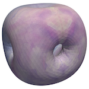 My PhD
thesis, which investigates many aspects of general curvature functionals in the abstract,
and applies some of them to the particular case of the p-Willmore energy.
Abstract: Functionals involving surface curvature are frequently
encountered when modeling the behavior of important biological structures such as lipid
membranes. To better understand these objects, we consider a general functional on surface
immersions which is dependent on the surface mean and Gauss curvatures. Variations of this
functional are presented, and stability criteria are given in terms of basic geometric
invariants coming from the surface fundamental forms. These results are then applied to a
particular curvature functional which generalizes the Willmore energy, and a nonexistence
result is presented. A constrained minimization problem is then considered, leading to a
stability result involving round spheres. Further study is done on a generalization of the
Willmore flow of surfaces in $\mathbb{R}^3$ – a geometric tool known for its aesthetic
beauty. In particular, two finite-element formulations of this problem are presented: one
which is applicable to surfaces presented graphically, and the other which models closed
immersed (possibly self-intersecting) surfaces and is amenable to constraints on surface
area and enclosed volume. It is shown in both cases that the energy decreases along the
flow. Moreover, stability and consistency results are obtained in the closed surface model,
and examples of the implementation are discussed. Inspired by conformal geometry, a
post-processing procedure is also presented, which ensures that a given surface mesh remains
nearly conformal along the Willmore flow despite its initial regularity. This abolishes the
mesh degeneration that usually accompanies position-based surface flows, and leads to a
robust model that can accommodate variable time steps as well as surface genera.